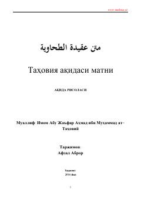

TAAhli sunna val jamoa e'tiqodining asosiy qoidalarini bayon etuvchi klassik aqida kitobi.
Ushbu asar Imom Abu Ja'far at-Tahoviy tomonidan yozilgan bo'lib, ahli sunna val jamoa e'tiqodining asosiy qoidalarini o'z ichiga oladi. Kitobda Allohning yagonaligi, sifatlari va islomiy aqidaning muhim masalalari hanafiy mazhabi nuqtai nazaridan bayon etilgan.